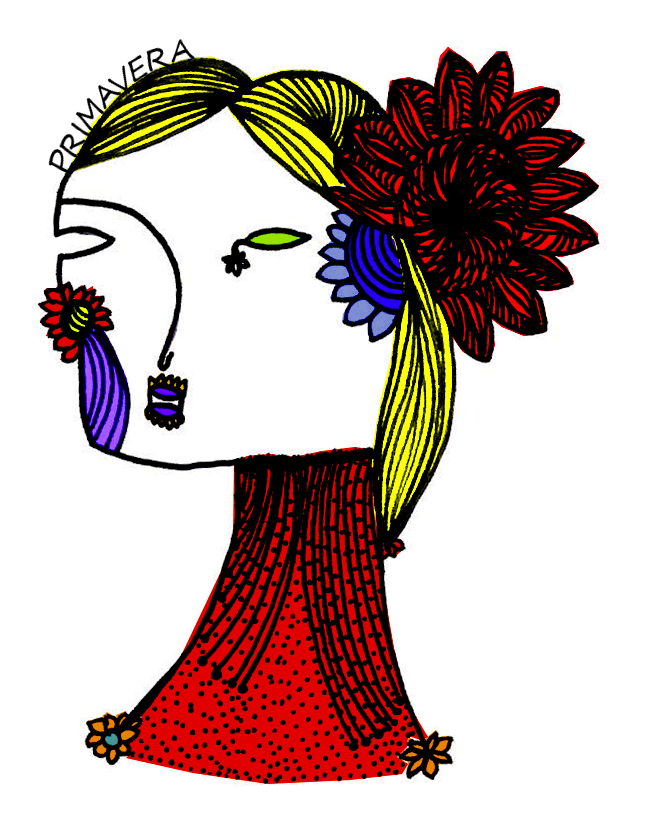
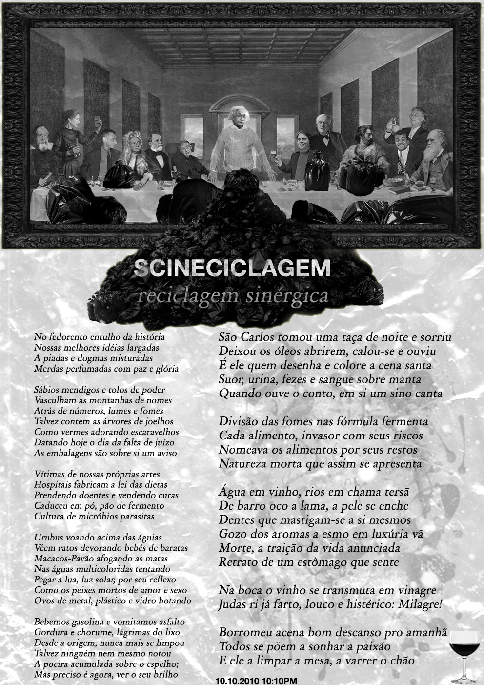

Primavera 2010 – setembro_outubro_novembro
Autorxs: bailux, dasilvaorg, efeefe, f?r!, imaginante, mabegalli, mondegrass, r4r3, siliamoan, tati prado.
Baixe a versão completa [1] - para aproveitar ao máximo o MutSaz - ou a versão leve [2] - para ler em telas pequenas. Você também pode navegar diretamente pelos textos da edição, nos links ao fim desse post.
MutSaz [3] é uma publicação trimestral colaborativa, sincronizada com as estações do ano, organizada pelo mutgamb.
mutgamb é uma iniciativa de produção editorial colaborativa articulada prioritariamente via internet. Agrega diferentes perspectivas acerca do diálogo entre tecnologias de informação e comunicação e a sociedade, ao mesmo tempo em que aplica os conceitos da desconstrução e da apropriação de tecnologias. O material que dá origem a tais obras é resultante das iniciativas da Rede Metareciclagem, formada por pessoas e organizações em todo o Brasil.
Saiba mais em http://mutgamb.org [4]
coletivo editorial: efeefe, mabegalli, siliamoan, mariwell, dasilvaorg, tati prado, gera rocha, teia camargo.
… eis que surge a primavera!
Disseram-nos que é assim que é. Acreditemos, portanto. Falar da primavera não é fácil. Vencer aquela tentação de ser bucólico e lírico, já antevendo a breguice procurando uma brecha pra se manifestar, é um risco.
Risco, rabisco, cores, sentidos e sons seriam o caminho desta vez. Um especial só com imagens eram os planos. Começamos bem, propagando a primeira videochamada feita pela Teia. Jeito bom de recomeçar, afinal essa é a segunda primavera do Mutsaz. Jeito gentil e doce de contar o tempo rumo à experiência: quantas primaveras ainda faremos?
Sabe-se lá. Só sei que a vida vai e vem. Pra quem tem alguma dúvida disso, olha lá a imagem que efe postou. Praqueles que voaram direto e reto pra nostalgia, divaguem ainda mais. Desfrutem calmamente a passagem do tempo, sutil como ela só, colorida e iluminada, que a Maira captou com delicadeza.
Agora, se tudo isto está abstrato e suave demais pro seu gosto, tem problema, não, oxe! Um metaencontro acabou virando megaencontro no Recife nesta temporada: a imagem do Orlando é só a porta de entrada pro assunto. Vasculha lá. Imagine a energia de muita gente junta. Imagine e depois sinta. Sinta e senta, que lá vem hestória. Dessa vez não é minha, não. Mas também é do tipo que nos leva de volta ao começo. A vários começos, por sinal. Da presença dos sons na vida do mondegrass à unidade mínima dessa pequena nação. Imaginação. Imagem em ação, conduzida por f?r!.
Por quem? Sei não, vai lá fazer seu exercício de identidade metarecicleira e descubra você mesmo. Com sua própria mão, cabeça e coração. Veja com seus próprios olhos. Ou melhor, imagine com todos os sentidos. Porque, a essa altura, já deve ter percebido que nossos planos mudaram. As palavras também pediram espaço. Mas tudo bem, palavras e imagens convivem há tempos. Tá tudo certo porque aqui sempre cabe mais um. Duvida? Apareça agora e numa próxima, exija ser bem recebido. Disseram-nos que é assim que é. Acreditemos, portanto.
Nessa temporada somos poucos, mas só nas aparências. Porque o que não se vê também está aí. Entre e procure.
Entre e confira.
Entre, a porta está aberta.
Entre nas entrelinhas, por entre cores, sentidos e sons.
Entre, na primavera a beleza espera por nossa presença contemplativa. Entre e aproveite!
Estamos aqui, de braços abertos, prontos pro abraço. Certamente contagiados por um agradável sorriso porque, afinal, é tempo de aniversário, festa, recomeço e alegria!
Seja bem-vindo!
A Primavera chegou e com ela a terceira musa dos ciclos das estações: Reva. Entre 23 de setembro a 22 de dezembro, é a vez dessa musa habitar o imagiário metarecicleiro.
Reva, prima próxima de bricolagem e das formas de Relva [5] e Reia [6], anagrama de Rave [7], é o dispertar das cores, de todos os sentidos e sons depois do silencioso inverno. Ela é a intensidade.
Primavera fluindo pelo ar à nossa volta. Todo mundo na correria - muito pólen pra colher por aí, muito sol pra tomar, espalhar a fertilidade pelo mundo. Reva, musa da estação, mostrando toda a sua força. Não conseguimos ainda sentar pra escrever (o que talvez seja apropriado) a chamada para o MutSaz de primavera, mas estamos nos direcionando para uma edição não-textual, só com imagens e links. Links para áudio, vídeo (e até texto), desse jeito espalhado, polinizando, fertilizando. A revista em si só vai ter ícones e índices para sentidos que não estarão ali. Primavera é época de ir pra rua outra vez.
Temos por enquanto uma videochamada:
Enquanto a gente elabora melhor a proposta (ou não), vá aí pensando em imagens, rabiscando, fotografando, murmurando, filmando, montando suas contribuições. No início de dezembro, a gente faz a coleta geral no wiki [8].
Atualizando o post com a provocação da Teia:
Primavera fluindo pelo ar à nossa volta. Todo mundo na correria - muito pólen pra colher por aí, muito sol pra tomar, espalhar a fertilidade pelo mundo. Reva, musa da estação, mostrando toda a sua força. Não conseguimos ainda sentar pra escrever (o que talvez seja apropriado) a chamada para o MutSaz de primavera, mas estamos nos direcionando para uma edição não-textual, só com imagens e links. Links para áudio, vídeo (e até texto), desse jeito espalhado, polinizando, fertilizando. A revista em si só vai ter ícones e índices para sentidos que não estarão ali. Primavera é época de ir pra rua outra vez.Temos por enquanto uma videochamada:Enquanto a gente elabora melhor a proposta (ou não), vá aí pensando em imagens, rabiscando, fotografando, murmurando, filmando, montando suas contribuições. No início de dezembro, a gente faz a coleta geral no wiki.Atualizando o post com a provocação da Teia:>> vamos fazer mapas metarecicleiros? [9]>> vamos fazer mapas metarecicleiros?
>> creio q essa edição do mutsaz pode ser recheada com imagens e signos que despertem a aproximação da quentura do verão e a necessidade de uma comunicação mais fluida, onde a escrita possa ser interpretada com símbolos e situações que contam histórias, que podem ser vivenciadas por quem quiser, a partir das sensações imagéticas do outr@ >> um mergulho na história alheia através de uma concepção imagética muito própria de cada um...
>> um mapa metarecicleiro: talvez convites como: vamos trocar figurinhas? e juntando essas figuras teremos um mapa [sensorial] imagético fragmentado (e montado na edição da revista) - pra depois ser ritualizado (talvez naquela brincadeira com a ferramenta "navalha" ou algo interativo (aovivo) num momento durante essa coleta de imagens..... creio q isso pode dar um sopro de vida nessas imagens :) e podemos pensar em ferramentas de mapeamento de vários níveis a partir desse mapa....
Publicado originalmente aqui [10].
 [11]
[11]


Por f?r! [12]
Publicado originalmente aqui [13].

Não bastaram todos os livros ou palavras memorizáveis em cantos do peso da moeda (pound's pound), nada que não fosse alegria de viver teve valor maior que seu uso (dever utilitarista). Cultuamos o humano culto, húmus do labor à nau, até ver-lhe as florróidas enciclopêuticas envenenando o sorriso de gesto em fezes cientecníficas. Cultuamos a humilde humanidade em seus cultos de fé na massa da missa (mess games) até que esquecemos que os olhos eram sementes de atos e fizéssemos latifúndios improdutivos de nossas chacras. Nem mesmo notar isto nos adiantou para sorrirmos e empinarmos nossas hélices sem o furor de sermo-nos. Quando postos em resistência à lógica binária, mantivemos sua paridade paraconsistente: Estávamos novamente uns contra os outros e contra nós mesmos. O nível de sucesso de uma conspiração (sub_versão) de qualquer forma é inversamente proporcional às conspirações internas. Mas o sucesso se tornou nosso inimigo também, afinal nós éramos os filhos do império filho do império. Somos contra o amor porque ele é a arma de controle digital dos bons e dos maus, somos contra os bons por nos apiedarmos da maldade em nossa ignorância do que queremos e em nossas abstenções plenas de juízo. Cultuamos a contrariedade contínua de nossos desejos e sensos na sensualidade da alteridade. Somos contra como falamos, quereríamos a novalíngua do polvo. Somos também a imaginação do futuro, sua sombra de luz. Aprendemos, seja lá o que for, mas aprendemos e este é um império sobre os sentidos pela pedagoria. Somos os tiozões de moleques que já pensam como aparelhos, avós de minas que sentem como máquinas. Deste avesso do heroísmo, seres com a pele (religação toque) para dentro d'alma e os órgãos (complexos de estratificação) expostos, quando fazemos algo de bom nos sentimos podres imperialistas do culto à classificação (hierarquia semântica) da linguagem, e quando somos elogiados ou gratificados nos humilhamos como os piores detratores da espécie por nossas horrendas demonstrações de fragilidade. Sempre a ruir contra o sucesso porque não temos mitos ou heróis que tenham sucedido em suceder sem sucumbir aos seus próprios desejos em prol dos outros. E ainda que sabendo disto, não nos ouviríamos em nome de enterrar alguma língua já morta. Fomos programados para ir contra o sucesso de qualquer empreitada, baseados nas premissas da continuidade inequívoca da guerra de todos contra todos. E nas ramificações naturais deste processo nos âmbitos de nossas subvivências: a vã guarda das modas de modos de atuação social do culto digital na cultura de ações e sócios; a competição das competências que embasam o macrocoletivismo denegrindo os afetos imediatos e diretos das microrganizações expontâneas. Negamos o tempo e a duração e por nossa admirável arrogância não queremos nos inserir como possibilidade de alguém que errou-se em si nem tampouco como mais uma escola, parte-ido, seita ou clube. Somos contra heróis, solistas, guerrilhas, os malditos gênios acorrentados como placas de rede slave a depender de suas memórias nas vaidades dos próximos. Temos vergonha de termos tido inspirações e nos chicotearemos mutuamente até que os burrocratas morram de rir em suas mansões. Contra o próximo em nome da ubiqüética. Contra a quantificação dos valores em dígitos cultuamos uma física dos qualia. Contra os complexos de épicos e as simificações côsmicas, contra-dígit forjamos uma syncomplexão e comsimplia. Uma crítica da razão metacrítica repousa no umbigo de todo fazedor de mudos, o que fala. O rolo com-im-pressor agora já imprime impressoras, como se escrevem línguas e programam programadores. Qual o papel do papel? A mão que assina o ato manchada de gangue. A resistência é a geradora da eletrocidade. O estatal é estático, ex-táctil. Somos contra a idealização da loucura e sua institucionalização, a arte; e a idealização do corpo produto e sua mercantilização, a arte. Mas só sabemos ser artistas e talvez de fato o sejamos para além de nossas escolhas e programações. Não bastaram todas as cartas de baralho, amor e amizade dos poetas, o cânone é o canhão nas muralhas do diálogo (a praça púbica). Somos contra a poesia, código do real, quereríamos ler direto na natureza legislada pela matéria. Mas ainda não queremos digitar a contracultura, somos contra o trabalho e achamos a preguiça a única opção contra a entretenimentação do ócio e da vida. Somos contra o diálogo, ligação serial das dúvidas, vírus de sistemas cognitivos. Contra o casal, a ascese, a higiene, a trindade, a suruba da série e o solilóquio da mônada, mas ainda não conseguimos falar todos ao mesmo tempo e nos ouvir em paz e ciência. Quem cala consente, eu não calo (mas sou contra falar na primeira pessoa do singular). Nós almejamos rastros e dejetos. Dig it all! Contra a anarqueologia e o desespero do esquecimento cultuamos a abolição da escritura no dialeto sutil. Evacuamo-nos de qualquer coisa que nos lembre da beleza das pequenas coisas. Contra a publicação, produção e veiculação de mais objetos de consumo cultural para a alienação da própria publicação, produção e veiculação dos processos de produção cultural. E antes de tudo, somos contra estarmos contra tudo. Bla bla amamos contra você.
Publicado originalmente aqui [14].
Parque do Ibirapuera, final de tarde chuvosa, primavera 2010.


Por r4re [15].
Quaresmeira, que fotografei nesta primavera lá em Bento Gonçalves. Fiz umas 30 fotos dela. Ali fui fazendo vários crops em diferentes zooms de 12 a 100% de 2 imagens diferentes e fiz uma composição em uma "espiral dentro de espaço quadrado.
Publicado originalmente aqui [16].
Como eu tinha avisado aqui [17], dediquei uma tarde no meio do Fórum de Cultura Digital [18] a brincar de identidades metarecicleiras [19]. Levei a tela de silk (é, aquela de 2006 que ainda tá rendendo), tintas, rodo, uns panos. Descolei umas folhas de flipchart, umas canetas e me instalei ali na tenda Hands On do Fórum. Um monte de gente passou por lá, estampou a própria camiseta, levou bandeirolas. Conversamos sobre laboratórios, metareciclagem, lista, thinner, bebês, comida, futuros. Pasteur Eixo dos Santos aproveitou a audiência para pregar sobre a liberdade e o compartilhamento de felicidade e conhecimento. Distribuímos mais algumas cópias impressas do História/s da/de MetaReciclagem [20]. MetaRecicleirxs (metarecicleiréchs) de toda parte passaram por lá, até quem mora mais longe: a família Puraqué [21], Régis Bailux [22] e Paty Pataxó [23], entre outras dezenas.
Eu rabisquei um roteiro para o exercício de identidade. Em resumo: faça sua bandeira, compartilhe suas experiências.

(foto de Daniel Varga)
No meio da tarde, levei a F4bs [24] até o canto onde o Pitanga [25] estava trabalhando com a Makerbot [26] do Garoa Hacker Clube [27]. No dia anterior, eu tinha dado uma carona para ele levar a impressora para a Cinemateca, e perguntado pra ele se era possível dar saída no logo da MetaReciclagem (as famosas três setas criadas por Bernardo Schepop [28]) em 3D. Ele falou que sim, se a gente tivesse o arquivo vetorial. Chamei a F4bs justamente pra ajudar a importar o SVG no Blender e poder transformar no formato que a máquina lê. Por razões que um leigo como eu não faz a menor ideia, o processo demorou algum tempo, mas no fim das contas deu certo. Uma vez enviado o arquivo, em menos de sete minutos tínhamos o primeiro exemplar do logo da MetaReciclagem em 3D.

Eu tinha copiado o arquivo do blender que a galera fez para o meu pendrive, mas ele resolveu se apagar sozinho uns dias depois. Vou pedir pra F4bs compartilhar e depois edito esse post.
No fim, o exercício rolou, daquele jeito que a MetaReciclagem tem insistido em ser - um exercício afetivo que toma a tecnologia por dominada e se concentra no encontro entre pessoas, que é muito mais importante. Na semana prévia ao aniversário do falecimento do @dpadua [29], esse exercício me fez lembrar da oficina que fiz com ele e a Bia Rinaldi e a Elly Guevara durante o Sinapse Digital [30], na Poli, alguns anos atrás. Já naquela época, não nos importava mais todo o discurso da migração para o software livre. Ele parecia rumar inexoravelmente para uma vitória, o que nos deixava livres para pensar em outras coisas.
Descolamos uma pilha de revistas e uma grande caixa cheia de papéis, cartolina, cola, tintas, canetas, tesouras, etc. Propusemos que as pessoas usassem aquelas tecnologias ali para expressar o que sentiam. Sim, aquilo era uma oficina de MetaReciclagem. No sentido mais puro possível: apropriação crítica de tecnologias para a transformação social. Se transformou alguma coisa na sociedade não sei, mas eu mudei para sempre.
---
Saudades, meu irmão! Espero que tenhas comemorado bem o dia da consciência de todas as cores, onde quer que estejas.
---
Atualizando: publiquei o vídeo da impressão 3D das 3 setas:
Por Imaginante Imaginário.
Na lista #metareciclagem, disponível aqui [31].
Você me pediu para te contar sobre o imaginante, eu vim aqui para te falar um pouco do que vivi....
Os fenômenos dançam.
O que tu chama de verdade, da tua identidade,
Para o imaginante é apenas o ponto zero da rede.
O lugar de onde ele produz as formas, as estruturas,
As oscilações e ondas que fazem teu mundo parecer sólido.
Você me pediu para te contar o que é um imaginante
E não consegui fazer isso de outra forma
A não ser tentando te mostrar porque você ainda não consegue ver.
O espaço informacional é por onde o imaginante caminha
E há um lugar e uma maneira de chegar a esse lugar
Que permite ao imaginante se reconhecer como tal.
Não é um lugar fácil de construir ou chegar
Nem tampouco pode ser comprado, imposto, forçado, mediado...
Ou exigido com base em algum reconhecimento que você ache que mereça ter.
O espaço da imaginante é o espaço de onde nascem as formas
De onde brotam os conceitos, novas palavras, definições, expressões,
E maneiras de se reinventar por entre margens e contornos do teu mundo.
O espaço do imaginante não é um espaço de poder
Não é um espaço de controle
Não é um espaço que pode ser conquistado
O espaço do imaginante é o espaço da pura possibilidade.
O teu dinheiro, a tua posição, as tuas conquistas
E a maneira que você se liga a elas, tentando preservá-las
Te impedem de entrar na rede do imaginante
Ele simplesmente faz escorrer por entre os teus dedos
Todo o poder que você acha que tem
Na tua íntima frustração de não entender e acessar o que o imaginante te parece ser.
O imaginante produz novas formas de conversar
Produz o espaço da possibilidade de encontro das pessoas
Dissolve certezas, se espalha por entre ideias,
Conecta opostos, deixa a mente livre para flutuar
Deixando poucas brechas de retorno para o que quer que seja.
O imaginante produz sua condição de liberdade
Mas você ainda não vai entender isso
Porque para ver a liberdade do imaginante
Você precisa conseguir acessar a pele esticada do seu tambor
Quando o timbre começa a soar
O fogo acende
A roda se forma
E os fenômenos apenas dançam na sua frente.
Você ainda não consegue acessar esse olhar
E fica se perguntando o porque.
Para isso, você precisa perder alguns dos teus maiores medos, medo de perder tua posição, tua sala, teu nome, tua reputação.
Precisa entrar no meio da multidão
Sentir seu cheiro, comer sua comida
Dormir sua cama
Soltar suas tantas certezas
E se dispor a sentar junto
Pensar junto, olhar junto, se comprometer com o desafio
E ficar junto até resolvê-lo. Teu tempo é outro.
Se você não tiver medo,
Eu te garanto,
Em algum momento você vai descobrir esse olhar que brota liberdade
Num momento, o imaginante te reconhece
O espaço dele se abre
E talvez, você consiga entender onde está aquilo que tanto procura.
Mas, você não pode comprar isso.
Suas conversas sobre rede, colaboração, inovação e micro-empreendedorismo estão longe de tocar o espaço do imaginante
Ele pára tudo isso e sorri da tua tentativa ingênua de manter teu controle, teu poder, tua reputação
Enquanto tenta, vestido da sua máscara de libertário, comprar teu espaço privilegiado em meio a multidão.
Não, você não vai conseguir
Sei que vai doer, mas só tem um jeito
Você vai ter de se despir
Entender o que significa o vamo que vamo
Perceber que não é um método
É puro movimento da produção da própria liberdade.
Você vai tentar, mas não vai conseguir comprar o imaginante
Você pode achar que conseguiu
Mas, dentro dele, há um espaço que você não consegue chegar, não consegue ver.
O código de metareciclar a produção de si do imaginante não é um conceito ou posição,
Apenas uma forma de viver que se é vivendo.
Por @mondegrass [32], disponível aqui [33].
Acho que a melhor forma de começar a contar uma história (ou estória) é pelo início. Então voilá.
Tudo começa em meados de 1992, quando tinha 8 anos e despertei minha atenção pra uma coisa chamada música. Não gostava de rotular e nem gostava de explicar, apenas gostava de música. Comecei ouvindo fitas K7 em um velho rádio, fui ter um tocador de vinil muitos anos depois. CD e VHS nem se fala... Sempre fui um cara de "penúltima geração", o que acho bem legal, diga-se de passagem. Isso me fez enxergar o "novo" com outros e bons olhos.
Nessa época, já descobri que queria ter envolvimento com música e um dia subir num palco com amigos (UMA BANDA) e tocar algo nosso. Mas esse "nosso" é no sentido de todas as pessoas que ouvissem, partilhassem sensações, viagens, memórias e tantas outras coisas que enxergamos com os ouvidos. Sinestesia. Eu tinha esse sonho e sim, tratava disso como um sonho.
Só que como todo ser humano, fui crescendo. Fiz uns bicos com 11 e comecei a trabalhar com 16 anos. Aos 18 estava numa empresa de grande porte, cheio de responsabilidades e com um salário relativamente interessante, tendo como referência o nível de vida da cidade onde moro. Estudava numa faculdade particular, pagando mensalidades que hoje nem consigo imaginar, tinha amigos e uma vida de plástico. Aquilo me consumia, me esgotava.
Meu violão ficava sempre jogado no quarto e tocar era sempre surreal. Sabia parcos acordes, ligava o rádio e tocava junto. Era massa me sentir parte da música, mesmo ela rolando no rádio. Eu repetia até as frases de agradecimentos dos caras.
Cheguei a um ponto que nem o violão pegava mais, não tinha tempo. Hoje percebo que na verdade não enxergava o tempo.
Em 2004, pensei em comprar uma guitarra, mas mudei de opinião pois nem o violão eu segurava. No final das contas, gastei a grana com alguma porcaria nonsense.
Já 2005 foi um ano complicado. Não li nenhum livro, não toquei nenhum dos 5 acordes que sabia no violão. Nunca tinha acessado a internet em casa, mal sabia que ela serve pra tanta coisa. Era um cara desacreditado, com forte tendência a permanecer na dieta conformista "trabalho, cerveja e televisão". Gostava muito de música, mas só no CD player (agora já tinha um). Não tinha vontade de acreditar em sonhos e achava que nenhum deles era possível. Fui descobrir que estava enganado.
Essa coisa da angústia era justamente a falta de vontade de acreditar em sonhos. Precisava desaprender um monte de coisa. Foi aí que tomei uma atitude (precisava tomar alguma) e nessas passei os três anos seguintes, largando trampo, faculdade e outros "itens de plástico" que tinha na vida. A ideia não era virar hippie e viver de brisa, era apenas viver. A partir de 2006 comecei a usar a internet em casa, em 2008 comecei a usá-la pra alguma coisa útil, até que chegamos em 2009.
Nesse ano já tinha uma guitarra e uma gaita, além da vontade imensa de continuar a desinventar coisas, desconstruir e partilhar a ideia do bom uso da informação, da internet, da mente.
Bem, daí através de uma troca de links cheguei aqui. Em 18/08/2009 recebi um email do @efeefe e conheci a lista #metarec. Aí começa outra parte da caminhada. Comecei a receber muitos emails, percebi que dava pra fazer muita coisa além do que imaginava. E olha que já me achava "pensante" pelos passos anteriores. Essa ingenuidade...
Ficava derretendo (= delirando) aqui lendo emails de pessoas que tinham e praticavam sonhos. Um dia vi um post da Maira sobre alguém ser "articulador de sonhos". Achei fantástico!
Depois do email do Felipe, mandei outro email pra lista e fui recepcionado pelo Dpádua e Lelex. Posteriormente troquei muita prosa com o Orlando e aí veio a ideia: sintetizar toda essa vontade de dizer coisas com algo que gostava, a música. Descobri também que a metareciclagem já estava presente na minha vida há muito, muito tempo.
Acho que por uma coincidência (ou ação) cósmica, um amigo me procurou com a ideia de criar ou transmitir algo sonoro diferente e de cara já joguei essa ideia de música desconstrutiva. Foi aí que recrutamos outro amigo e começamos uma empreitada bem diferente. Então fomos ensaiar num lugar interessante: o mato. Durante o último 1 1/2 ano, passamos quase todos os sábados tocando, trocando ideias e absorvendo os sons do mato. Nossos ensaios eram nos arredores montanhosos da cidade de Guaxupé e nesse tempo só levamos um par de violas, percussão e um gravador. Trombamos carcarás, inúmeros pássaros, macacos e até um lobo. Vários sons olhando árvores centenárias, o lago clássico. Sinestesia (2).
Poucas pessoas sabiam dessa empreitada. E as músicas aconteciam em meio a barulhos da natureza. Algumas vezes no meio do som ecoava um trovão, caía a chuva. Uma energia que nem o melhor estúdio do planeta pode proporcionar, eu garanto.
Desenhamos algumas letras, pintamos algumas músicas e posteriormente lascamos uns toques de eletricidade. Depois de ensaios agora em chão de cimento, terminamos algumas músicas.
No último #mutsaz rolou uma prosa no irc, troquei ideia com a Tati, Sília, Maira e Téia sobre "um sonho" que estaria prestes a rolar. Mas passamos por um imprevisto aqui e atrasamos a estreia. Continuar a caminhar, e...
Bem, no último sábado dia 27/11 - alguns dias deps do #dpaduaday - aconteceu em Guaxupé nosso primeiro espetáculo. Com 26 anos de idade, pela primeira vez estive a frente de um lance desses, tocando e cantando. Nossa banda, A Carvoeira, surgiu com seu modesto som, a psicodelia do mato. Foi incrível, ao mesmo tempo que eu tremi como vara verde. Logo posto registros do dia.
Pois é, nós humanos inventamos coisas demais. Tá na hora de desinventar, né?
Amigxs, obrigado. Mais de 15 anos depois o menino lá de 1992 realizou um sonho. Sábado agradeci a todos que contribuíram pra esse sonho, não lá com o microfone na mão, mas quando cheguei em casa pra dormir. Quero que logo venham conhecer a minha cidade.
E finalizando, dizem que o termo "história" é algo real, e "estória" algo imaginário. Então chamarei esse texto de "hestória", o imaginário-real. Essa palavra já existe? Hoje creio que não há hora melhor pra um sonho aparecer do que a primavera.
E me desculpem pelos erros, quem escreve aqui é o carinha de 8 anos, desses que escreve milhões de vezes uma palavra que admira, como "sonho".
Links:
[1] http://mutgamb.org/sites/mutgamb.org/files/mutsaz/reva/mutsaz_reva_completo.pdf
[2] http://mutgamb.org/sites/mutgamb.org/files/mutsaz/reva/mutsaz_reva_leve.pdf
[3] http://mutgamb.org/conteudo/Mutirao-Sazonal
[4] http://mutgamb.org
[5] http://www.dicio.com.br/relva/
[6] http://pt.wikipedia.org/wiki/Reia
[7] http://www.dicionarioweb.com.br/rave.html
[8] http://rede.metareciclagem.org/wiki/MutSazReva
[9] http://mutgamb.org/blog/Reva-MutSaz-Primavera-2010
[10] http:// http://rede.metareciclagem.org/blog/09-12-10/Perivaldo
[11] http://rede.metareciclagem.org/blog/29-11-10/MetaEncontro-em-Recife-oxe
[12] http://filosonia.110mb.com/
[13] http://rede.metareciclagem.org/blog/09-12-10/Culto-Dialegital-ao-Contra
[14] http://bikini.veredas.net/2010/11/seiva/
[15] http://reinehr.org/
[16] http://rede.metareciclagem.org/blog/03-12-10/Exercicio-de-Identidade-MetaRecicleira
[17] http://rede.metareciclagem.org/blog/10-11-10/MetaReciclando-o-Forum-de-Cultura-Digital
[18] http://culturadigital.br/forum2010
[19] http://rede.metareciclagem.org/blog/30-11-09/Sob-Misterios
[20] http://mutirao.metareciclagem.org/livro/Historia-da-MetaReciclagem-Historias-de-MetaReciclagem
[21] http://puraque.comumlab.org/
[22] http://bailux.wordpress.com/
[23] http://aldeiavelha.descentro.org/
[24] http://estudiolivre.org/el-user.php?view_user=fabs
[25] http://pitanga.polignu.org/
[26] http://makerbot.com/
[27] http://garoa.net.br/wiki/Pagina_principal
[28] http://twitter.com/#%21/schepop
[29] http://twitter.com/dpadua
[30] http://rede.metareciclagem.org/conectaz/Sinapse-Digital
[31] http://rede.metareciclagem.org/blog/09-12-10/Notas-do-Imagnante
[32] http://twitter.com/mondegrass
[33] http://rede.metareciclagem.org/blog/01-12-10/Hestoria